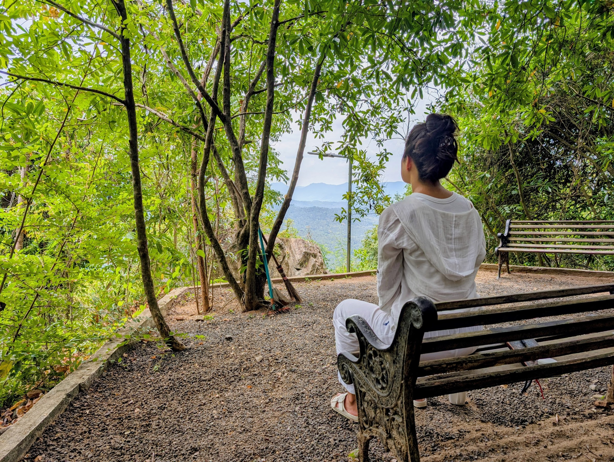

නේවාසික භාවනා වැඩසටහන
රිදීකන්ද ආරණ්ය සේනාසනය
හැඳින්වීම
රිදීකන්ද ආරණ්ය සේනාසනයේ නේවාසික භාවනා මධ්යස්ථානය සාදරයෙන් පිළිගනිමු — ශ්රී ලංකාවේ මාතලේ දිස්ත්රික්කයේ යටවත්ත ප්රදේශයේ උඩස්ගිරිය ග්රාමයට යාබදව, භාවනාවට උචිත පරිසර පද්ධතියක් සහිත කඳු ගැටයක ආරණ්යයත් නේවාසික භාවනා මධ්යස්ථානයත් පිහිටා ඇත.
රිදීකන්ද ආරණ්යය මූලික වශයෙන් නේවාසික භාවනා භික්ෂුන් වහන්සේලා වෙනුවෙන් නිර්මාණය වූවත්, භාවනා පුහුණුව අපේක්ෂා කරන මෙහෙණින් වහන්සේලා සහ ගිහි පිරිමි සහ කාන්තා සියලු පාර්ශ්වයන්ට ගැලපෙන ලෙස කෙටි නේවාසික භාවනා වැඩසටහන් අපගේ නේවාසික භාවනා මධ්යස්ථානය තුළ ක්රියාත්මක කෙරේ. එහිදී සතිපතා සහ මාසිකව පැවැත්වෙන එක් දින භාවනා වැඩසටහන් සහ දින 07 නේවාසික සමථ සහ විදර්ශනා භාවනා වැඩසටහන් පැවැත්වේ. කෙටි දින වැඩසටහන් සඳහා ද අවස්ථාව ඇත.
භාවනා කම්මට්ඨානාචාර්යන් වහන්සේලාගේ අනුශාසනා සහ ගුරු ඇසුර යටතේ භාවනා පුහුණුව ලැබීමට භාවනායෝගීන් හට අවස්ථාව ලැබෙනු ඇත. සමථ සහ විදර්ශනා භාවනා පුහුණුව තුළින් ආර්ය මාර්ගය මනා කොට වඩා ගැනීමටත්, උතුම් අවබෝධයන් පිණිස වූ ධර්මය ඉගෙනීම සහ ඒ තුළින් පෞද්ගලික කර්මස්ථානයන් සමාදන් වීමත්, මෙම භාවනා පුහුණු වැඩසටහන් තුළින් අවස්ථාව හිමිවේ.
වැඩසටහන
වැඩසටහන පිළිබඳව හැඳින්වීම
ථෙරවාද බුද්ධ දර්ශනයෙහි කෙළවර දර්ශනය වූ නිර්වාණය අරමුණු කරගත්, ඒ සඳහා සැකසූ ක්රමානුකූල මාර්ගයක භාවනා යෝගීන් ගමන් කරවීම පිණිස නේවාසික භාවනා වැඩසටහන් තුළ පුහුණු කරවයි.
මූලික අදියර ලෙස භාවනා යෝගියාගේ චිත්ත ඒකාග්රතාවය වර්ධනය කරවීම සඳහා විවිධ සමථ භාවනා කර්මස්ථානයන් නිර්දේශ කරමින්, ඒ ඔස්සේ විදර්ශනාව සඳහා අවශ්ය මූලික චිත්ත ඒකාග්රතාවය තහවුරු කරවීම සිදුකරයි.
ඉන්පසු ආර්ය මාර්ගයේ පිළිවෙළින් උදය-වය, භංගය, ආදීනවානුපස්සනා ආදී වූ ඥානයන් ප්රත්යක්ෂ කිරීම උදෙසා අවශ්ය ධර්ම දර්ශන ඉගැන්වීම සහ ඊට අදාළ වූ පෞද්ගලික කර්මස්ථානයන් නිර්දේශ කරමින්, එය ප්රායෝගිකව වැඩීම පිණිස මාර්ග උපදේශනය විදර්ශනා භාවනා වැඩසටහනේ සිදුකරයි. ක්රමයෙන් ධර්ම මාර්ගය ඔස්සේ පරිණත වන භාවනා යෝගියා ගැඹුරු ධර්ම දර්ශන අධ්යයනය කරමින් සම්මා ඥානයන්ගේ ප්රත්යක්ෂතාවයත් එමගින් අත්දකින ජීවිත අවබෝධයත් මෙම විදර්ශනා භාවනා වැඩසටහන තුළින් ළඟා කරගනියි.
ඒ සඳහා මුල සිට අද දක්වා ශ්රී සද්ධර්මය, ත්රිපිටක ගත සූත්ර, අභිධර්මය සහ විනය තුළින් උගන්වමින්, එහි ප්රායෝගික දර්ශනයන් කර්මස්ථාන මඟින් වැඩීම සඳහා මාර්ගෝපදේශයන් ලබා දීම සිදුකරයි. ගුරුවරයා සමඟ ළඟින් ඇසුරු කිරීමටත් ඒ තුළින් ධර්ම ගැටළු සහ ප්රායෝගික ගැටළු නිරාකරණය කර ගැනීමටත් නේවාසික භාවනා වැඩසටහන සම්බන්ධ වන භාවනායෝගීන්ට අවස්ථාව හිමිවේ.
දින චරියාව
දෛනික වැඩසටහන
සෞඛ්ය අවශ්යතා
මානසික සෞඛ්ය ස්ථාවරත්වය
විදර්ශනා භාවනාව යනු දැඩි මානසික සහ හැඟීම්බර ස්ථාවරත්වයක් අවශ්ය වන අභ්යාසයකි. ඔබට පශ්චාත් ව්යසන පීඩන විෂාදය (PTSD), මනෝවික්ෂිප්ත ආබාධ (Schizophrenia හෝ Bipolar), දැඩි සායනික විෂාදය (Severe Clinical Depression), වියෝජන ආබාධ (Dissociative Disorders) හෝ සක්රීය මත්ද්රව්ය ඇබ්බැහියක් පිළිබඳ ඉතිහාසයක් තිබේ නම්, මෙම වැඩසටහන ඔබට දරාගත නොහැකි හෝ හානිකර විය හැකිය.
ශාරීරික අවශ්යතා
මෙම ආරාමය පිහිටා ඇත්තේ ඉතා බෑවුම් සහිත කඳුකර ප්රදේශයකය. භාවනා ශාලාව, භෝජනාගාරය සහ නවාතැන් ප්රදේශ වෙත ළඟා වීමට දිනකට කිහිප වතාවක් පඩිපෙළ නැගීමට සහ බැසීමට සිදු වේ. එබැවින් ඇවිදීමේ අපහසුතා, හෘද රෝග, හෝ පඩිපෙළ නැගීමට බාධා වන නිදන්ගත දණහිස්/කොන්දේ වේදනා ඇති පුද්ගලයින් සඳහා මෙම ස්ථානය සුදුසු නොවිය හැකිය.
සෞඛ්ය වගකීම් ප්රකාශය
වෙන්කිරීම සිදු කිරීම මගින්, ඔබ රැඳී සිටින කාලය තුළ ඇති විය හැකි කිසිදු ශාරීරික හෝ මානසික සෞඛ්ය ගැටලුවක් සම්බන්ධයෙන් රිදීකන්ද ආරණ්ය සේනාසනය වගකීමක් නොදරන බව ඔබ පිළිගනු ලබයි.
විනය සහ හැසිරීම්
ආරාම විනය සහ පුද්ගල හැසිරීම්
ඇඳුම් පැලඳුම්
ශරීරය හොඳින් ආවරණය වන පරිදි සුදු හෝ ලා පැහැති ඇඳුම් ඇඳීම අනිවාර්ය වේ. ශරීරය නිරාවරණය වන, තද වර්ණ සහිත ඇඳුම් ඇඳීමෙන් වැළකී සිටීමට කාරුණික වන්න.
තාක්ෂණික උපකරණ භාවිතය
භාවනාව කෙරෙහි පූර්ණ අවධානය යොමු කිරීම සහතික කරනු පිණිස, ජංගම දුරකථන, ටැබ්ලට් සහ ලැප්ටොප් ඇතුළු ඉලෙක්ට්රොනික උපකරණ භාවිතය අවම කරන ලෙස සහභාගිවන්නන්ගෙන් දැඩිව ඉල්ලා සිටිනු ලැබේ. විශේෂයෙන්ම භාවනා වේලාවන්හිදී දුරකථන ඇමතුම් ලබා ගැනීම සහ ශබ්ද නගා කතා කිරීම සීමා කර ඇත.
පරිසරයට ගරු කිරීම
සහභාගිවන්නන් පරිසරයට කුණු දැමීමෙන් හෝ අවට ඇති ගස්වැල් සහ සතුන්ට හානි කිරීමෙන් වැළකී සිටිය යුතුය. වන සතුන්ට (වඳුරන් හෝ සුනඛයන් වැනි) ආහාර දීම ඔවුන්ගේ ස්වභාවික පුරුදු අඩාල කරන බැවින් එය සපුරා තහනම් වේ.
නවාතැන් සහ දෛනික ජීවිතය
ආහාර වේලාවන්
ආරාම සංස්කෘතියට අනුකූලව, ආරාමය මගින් පූර්ණ උදෑසන සහ දහවල් දානය ලබා දෙන අතර, සවස් කාලය සඳහා සැහැල්ලු සුප් වර්ගයක් හෝ කැඳ වර්ගයක් ලබා දෙනු ඇත.
අත්යවශ්ය ද්රව්ය
සහභාගිවන්නන් තමන්ට අවශ්ය දෑ පිළිබඳව ස්වයංපෝෂිත විය යුතු අතර, තමන්ගේම තුවා සහ පිරිසිදු කිරීමේ ද්රව්ය (සබන්, ශැම්පු, දත් බෙහෙත්) රැගෙන ඒමට කාරුණික වන්න.
නිශ්ශබ්දතාවය
නිශ්ශබ්දතාවය රැකීම මෙම වැඩසටහනේ මූලික අංගයකි. නියමිත නිශ්ශබ්ද වේලාවන්හිදී සහ භාවනා වාරයන්හිදී නිශ්ශබ්දතාවය අනිවාර්යයෙන්ම සුරැකිය යුතුය.
සුරතල් සතුන්
ආරාම පරිශ්රය තුළට සුරතල් සතුන් රැගෙන ඒමට අවසර දෙනු නොලැබේ.
පැමිණීම සහ පිටවීම
වේලාවට පැමිණීම
අපහසු මාර්ග (off-road) හරහා ආරක්ෂිතව ගමන් කිරීමටත්, සවස් කාලයේ වැඩසටහන ආරම්භ වීමට පෙර පැමිණීමටත් කාරුණික වන්න.
පිටවීමේ කොන්දේසිය
වැඩසටහන අවසානයේදී, සහභාගිවන්නන් තමන් රැඳී සිටි ස්ථානය පැමිණි අවස්ථාවේ තිබූ තත්වයටම හෝ ඊටත් වඩා පිරිසිදු තත්වයකට පත් කිරීම ඔබේ වගකීම වේ.
වියදම් සහ පරිත්යාග
නවාතැන්, දානය සහ පරිත්යාග
භාවනායෝගී සියලු දෙනාටම අවශ්ය නවාතැන් පහසුකම් සහ දානය සලසනු ලැබේ.
ශ්රී ලාංකික සියලුම භාවනායෝගීන් හට මෙම භාවනා වැඩසටහන් සඳහා අයකිරීමක් සිදු නොකෙරේ (වැඩසටහනට දින වෙන්කරවා ගැනීමේදී රු. 3000 ක (ඇ.ඩො. 10) තැන්පතු මුදලක් අයකර ගැනීම හැරුණු කොට).
නමුත් පුහුණුව ලබන නේවාසික සියලු දෙනාට අවශ්ය දානය සඳහා වියදම් සහ ආරණ්යයේ අනෙකුත් පිරිවැය සඳහා ඔබ සියලු දෙනාගේ පරිත්යාගයන් අපේක්ෂා කරමු.
දැනට මෙම වෙන්කරවා ගැනීමේ පහසුකම තුළින් අයකිරීමකින් තොරව ඔබට වෙන්කර ගත හැක්කේ පොදු නවාතැන් පහසුකම් (shared space) වන අතර, ඔබට තනි කාමර පහසුකම් අවශ්ය නම් යම් ගෙවීමකට යටත්ව එම පහසුකම ලබා ගත හැක. (ඒ සඳහා විමසීමක් කළ යුතුය.)
වෙන්කරවා ගැනීම
වෙන්කරවා ගන්නේ කෙසේද?
අපි ප්රධාන වශයෙන් සෑම මසකම කලින් සැලසුම් කළ දිනවල සත් දින සමථ සහ විදර්ශනා භාවනා වැඩසටහන පවත්වනු ලබයි. තෝරාගත් දිනවල කෙටි කාලීන වැඩසටහන් වලට ද සම්බන්ධ විය හැක. ඉඩකඩ සීමිත බැවින් කලින් දින වෙන්කරවා ගැනීම සුදුසුය.
විද්යුත් තැපෑල: rideekanda@gmail.com